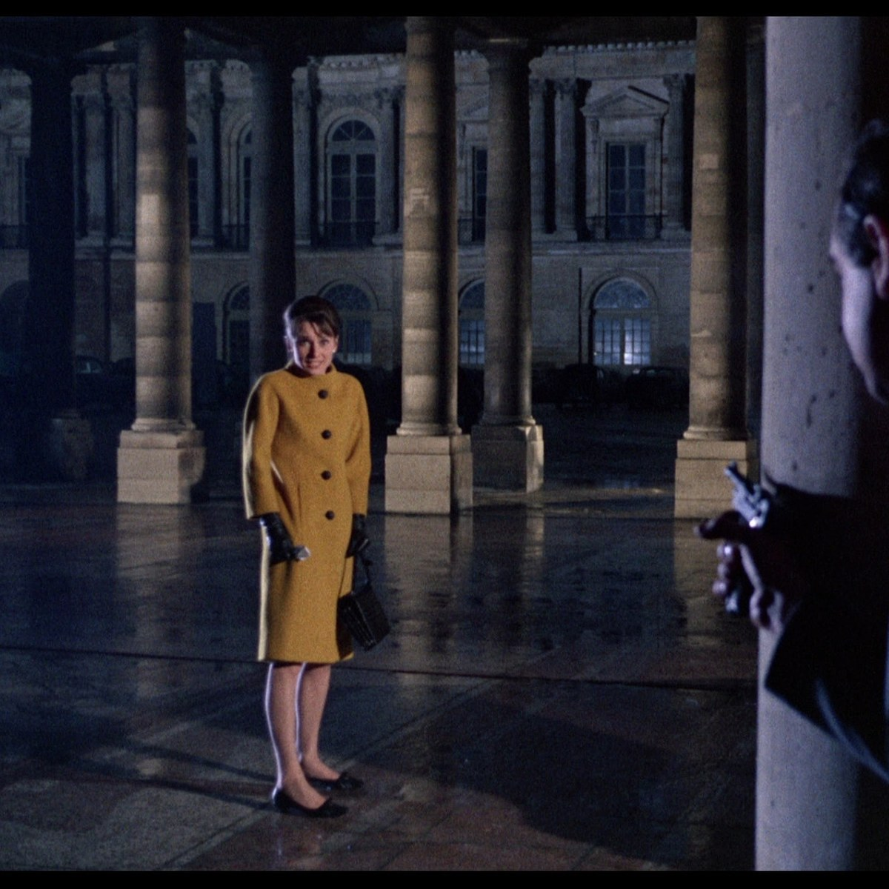

Actor guide
Callback prep:Recreate what you did — then adjust.
A callback isn’t always a brand-new audition. Often they liked something specific: a choice, a look, an energy. If you can’t remember what you sent three weeks ago, you’re reinventing a job you already booked a seat for.
Why continuity matters
Casting and directors compare takes. They may want the same wardrobe so the character still matches the first round. They may say “do what you did, but…” — which only works if you know what “what you did” was. Coaches and working actors who push logging say the same thing: the diary saves the callback. (See the sources linked in how to keep an audition log.)
What to write the day you tape or leave the room
One minute. On the job record:
- Wardrobe (photo if you can — colour, jacket, jewellery)
- Hair / accent / slate notes
- The main choice you played (one sentence)
- Anything they redirected in the room
- Which take you sent (or attach the file)
That’s enough. You don’t need a novel. For deeper character work, keep using character secrets and audition prep — the callback note is continuity, not a second Method essay.
When the callback lands
- Open the original job — don’t start a blank one.
- Re-watch or re-read what you sent if you still have the file.
- Match wardrobe unless they ask for a change.
- Start from the same spine; only then apply new notes.
- Update status to Callback and log the new due date so you don’t miss it — deadlines still apply.
Keeping it on the audition card
In Audition Tracker, the note and the self-tape live on the same card as the casting office and dates. When Home says callback, the first take is one tap away — not lost in Camera Roll.
One-time purchase on iPhone and iPad; Premium optional.
Download Audition Tracker. Write the one-liner before you celebrate the email.
← All guides · Prep · Log · Self-tape